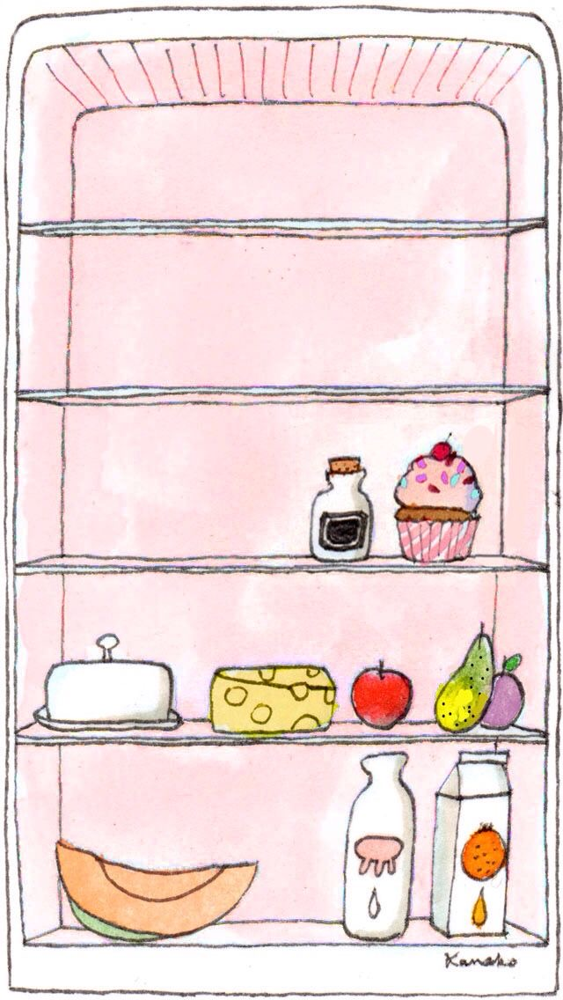

복용 중인 약을 고르고, 가지고 있는 음식을 선택하면 주의해야 할 식재료를 알려드려요.
1 복용 중인 약 선택 (여러 개 선택 가능)
2 가지고 있는 음식 선택

🧊 냉장고를 열어 칸마다 가진 음식을 골라보세요
✏️ 찾는 음식이 없나요? 직접 입력해서 추가하세요
위 아이콘 목록에 없는 식재료·음식 이름을 적고 추가하면, 선택한 약과의 상호작용을 함께 확인해 드려요.